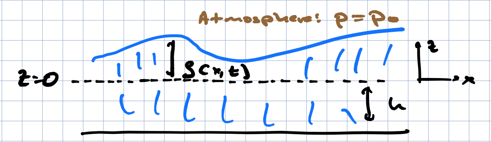

Surface Gravity Waves
Contents
Surface Gravity Waves¶
We will open with waves on the surface of a fluid, bounded from above by another fluid (think the ocean and atmosphere), in a small-amplitude regime so that we can linearize the equations of motion about a static configuration with a flat interface. As with any physical small oscillations, waves arise from a restoring force. For surface waves the sources of a restoring force are gravity and surface tension. Waves whose dynamics are dominated by gravity are called surface gravity waves, while those with dynamics dominated by surface tension are called capillary waves.
(These are distinct from gravitational waves of the kind measured by LIGO!)
Setup in 2 dimensions¶
For simplicity we will work in 2 dimensions corresponding to a horizontal and a vertical direction. We start by considering a fluid of constant density and finite depth, as shown here:

We will take the atmospheric pressure to be constant at the fluid interface (pretty good approximation for ocean waves). We consider small amplitude waves about the basic state \(\zeta = 0\), \({\vec v} = 0\), and assume the flow is irrotational: since we are working with the inviscid equations, we are guaranteed this so long as the initial state at \(t = 0\) is irrotational (2d vorticity is conserved along fluid trajectories). This means we can consider \({\vec v} = {\vec \nabla}\phi\). Bernoulli’s equation (just the Euler equation for this case) plus incompressibility gives us:
We will assume that the perturbations are in some sense small, in particular that \(\zeta \ll h\), and To solve this we must further supplement this with boundary conditions. In this case, at \(z = - j\) we must have \(v_z = \partial_z \phi = 0\), At the free surface, we demand \(v_z = \partial_z \phi = \partial_t \zeta\). Thus, at the surface where \(p = p_0\), we have \(p_0 = - \rho(\partial_t \phi + g \zeta\). Taking the time deivative of this and using the boundary conditions, we find:
We are going to look for solutions which oscillate in \(t,x\): that is, they take the form
Laplace’s equation then gives us \(\partial_z^2 F = k^2 F\), which means \(F = A e^{kz} + B e^{-kz}\). If we impose \(\partial_z \phi(z = -h) = 0\), some algebra leads to \(F = D \cosh k(z + h)\).
Next, we impose the boundary condition at \(z = \zeta\). In general this boundary condition is nonlinear: to be precise we would set \(\partial_t^2 \phi(x,\zeta,t) + g \partial_z\phi(x,\zeta,t)\). We will keep the equation at zeroth order in \(\eta\), so that \(\partial_t^2 \phi(x,0,t) + g \partial_z \phi(x,0,t) = 0\). Plugging our general solution into this, we find that
There are two obvious limits here. In the first, \(k h \gg 1\), corresponding to wavelengths much shorter than the fluid depth. This is a “deep water” limit and in this case \(\omega^2 = g k\), so that \(v_p = \sqrt{\frac{g}{k}}\) and \(v_g = \frac{1}{2} \sqrt{\frac{g}{k}}\). So long-wavelength modes propagate more qucly than short-wavelength modes. We can see this in the atmosphere in the satellite picture of teh Tonga explosion that we saw earlier.
Another limit is “shallow water”, in which \(kh \ll 1\), so the wavelength is long compared to the height. This is often an important limit in both the linear and nonlinear problem, in part as planetary fluids have important motion on scales larger than the fluid depth. In this limit, \(\omega^2 = gh k^2\), so the phase and group velocity are \(v = \sqrt{gh}\), and the waves are nondispersive: Gaussian wavepackets will remain Gaussian and not spread. The pressure wave you see in the Tonga explosion viseo has the same dispersion relation (with \(c\) = speed of sound).
Solutions and their properties¶
Given the above, we have found that oscillatory solutions take the form:
where \(\delta\) is an arbitrary phase. We can now write the physical variables as:
Note the nontrivial phase relations. At the crests (at fixed \(z\)), \(\zeta\) is maximal when \(v_x\) is positive and minimal when \(v_x\) is negative, while \(v_z\) will as expected vanish here.
With this we can test he validity of the linear regime. This will hold when the advective term \({\vec v} \cdot {\vec\nabla} {\vec v}\) is small compared to linear terms such as \({\dot {\vec v}}\). The latter \(\sim \omega C k\); the former \(\sim C^2 k^3\). Thus,
In other words \({\vec v}\) must be small compared to the phase velocity.
Lagrangian picture¶
It is worth understanding what individual particles are doing in this flow. For this, we would like to solve the equations:
These are horribly nonlinear, even though the underlying equations are linear. However, we are assuming \({\vec v}\) is in some sense small, in that \(C k^2/\omega \equiv \epsilon \ll 1\). We will write \({\vec x} = {\vec x}_0 + \epsilon {\vec x}_1 + \epsilon^2 {\vec x}_2 + \ldots\), where \({\vac x_0}\) is a constant. We will also write and \(v_x = \epsilon \omega/k \sin(\omega t - k x - \delta) \cosh[k(z + h)]\), and similarly for \(v_z\).
Now expanding the Lagrangian particle equations in powers of \(\eps\), we find to lowest order:
With a bit of algebra, we find that to this order,
This is the equation for an ellipse. In the deep water limit, with \(k (z_0 + h) \gg 1\), the hyberbolic functions become exponentials and we get a circle:
Thus, even though the=is “monochromatic wave” wave may be moving at the phase velocity, to lowest order the particles are just moving in circles. which get smaller at depth.
It is worth at least mentioning the effects of the next order corrections. At this point the above equations are not in fact technically adequate as at order \(\epsilon^2\), the nonlinear term in Euler’s equations will also contribute. However, in the deep water limit this ends up no contributing. Since we are looking at inviscid flow, we can use Bernoulli’s theorem
together with the boundary conditions. We would expand \(\phi, \zeta, p\) in \(\epsilon\), and the first nonlinear correction appears at order \(\epsilon^2\). This has the form
Since \({\vec v^{(0)} = 0\) we have the same equation as for \(\phi_1,{\vec v}_1\), but with the term
\(\frac{1}{2} \left({\vec v}_1\right)^2\). Next, as before we work at \(z = \eta\),
expanding \(\eta = \epsilon \zeta_1 + \epsilon^2 \zeta_2 + \ldots\). Solving
the boundary cunditions order by order we have \(\partial_t \zeta_k = \partial_z \phi_k\).
At the surface we have
Taking the time derivative of this equation, and imposing the boundary conditions, we get
Now let us work in the deep water limit, replacing the hyberbolic funvtions in \({\vec v}_1\) with exponentials, we find that the nonlinear term \(v_x {\dot v}_x + v_z {\dot v})z = 0\). Thus the second order solutions solve the same equations as the first order solutions, and we can to this order maintain the form of the velocities and Lagrangian trajectories.
This still leaves us with solving the equations for \({\vec x}_2\). Expanding the Lagrangian equations for \({\vec x}\) to order \(\epsilon^2\), we find:
and similarly for \(z_2\). Now inserting the first order solutions in, we find
So we get a constant drift at this order, known as the Stokes drift, which is extremely important in understanding transport of particles by waves.